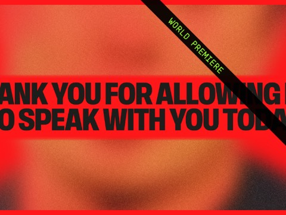

Screening event · Double Exposure 2025
Short Strand 1: Illuminating Memory
Friday, October 31, 2025 · 11:00 AM · Martin Luther King Jr. Memorial Library
Audience talkback with Conall Jones, Sandro Ramani and Corey Devon Arthur (remote), Anurima Bhargava, and Kate Stonehill, moderated by Benjamin Duchek.
Films discussed
- All the Empty RoomsJoshua Seftel2025 · 33 min
 In Exchange for FleshCorey Devon Arthur, Sandro Ramani2025 · 15 min
In Exchange for FleshCorey Devon Arthur, Sandro Ramani2025 · 15 min Teaching AmericaAnurima Bhargava2025 · 20 min
Teaching AmericaAnurima Bhargava2025 · 20 min
Thank You for Allowing Me to Speak with You TodayKate Stonehill2025 · 8 min